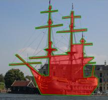

|  |
Amazon Mechanical Turk for LabelMeWant to outsource your labeling task to the internet? Amazon Mechanical Turk allows access to many internet users who are ready to perform tasks for a fixed price. The idea is simple: you provide a task and a selling price. Internet workers perform the task and are subsequently paid. In Mechnical Turk terminology, tasks are called "HITs", people requesting work are called "Requesters", and people who do the work are called "Workers". This page describes how to set up LabelMe annotation tasks onto Mechanical Turk. The process is simple, as we have provided scripts for creating and sending LabelMe annotation tasks onto Mechanical Turk. All you have to do is follow the instructions below and pay workers on Mechanical Turk to label images. We collect the annotations, which are immediately available for download. In this way, everybody wins: Mechanical Turk workers get paid, you get your images annotated, and the computer vision community gets access to more hand-labeled data. Instructions for setting up LabelMe on Mechanical TurkSetting up LabelMe on Mechanical Turk is easy. The following are instructions for setting up LabelMe on Mechanical Turk. 1. Upload images onto LabelMe
To upload a collection of images to LabelMe, simply contact us and we can arrange to put your
images into a folder.
We ask that your images do not contain any spaces or special
characters (use
Remember the name of 2. Set up an Amazon Mechanical Turk accountYou will need to set up an account as a Requester on Mechanical Turk. Instructions for setting up an account are here. Once you have created an account, sign in and try to access your account, along with the sandbox (used for debugging). 3. Download and install Amazon Mechanical Turk Command Line ToolsYou will need to install the Amazon Mechanical Turk Command Line Tools. The tools provide the backbone for communicating with the Mechanical Turk servers. To start, you first need to request your access key and secret key. This is different than your username and password. To do this, create an Amazon Web Services account. Once the account is created, go to "Your Account->Access Identifiers", which is located at the top of the page. Here, you will find your access key and secret key. Next, download the Amazon Mechanical Turk Command Line Tools (note that so far, we have only tested the Linux/Mac version). Unzip the file and follow the instructions inside the directory to install the Command Line Tools.
As a reminder, open and modify
4. Download scripts for sending LabelMe jobs to Mechanical TurkScripts for sending LabelMe jobs to Mechanical Turk are available here (currently, the scripts are available for Linux/Mac only). After download, unzip the file and change to the directory. The zip file contains a set of scripts that are used to interact with Mechanical Turk, along with files used to set how the task is performed (e.g. how much do the workers earn, list of jobs, etc.). In addition, a Matlab function is included to assist in setting which images are to be annotated. 5. Submit jobs to Mechanical Turk
Let us now submit jobs to Mechanical Turk.
In this section, we will use Mechanical Turk's "sandbox" server.
The sandbox is free to use (you have fake credits on this server), so
you can test here to make sure everything works. When you are ready
for the real thing, simply remove all cd /path/to/LabelMeMechanicalTurk/).
Next, start MATLAB and run the following at the prompt (use the value
of FOLDER from Step 1 above):
The script will produce a file called We are now ready to submit to Mechanical Turk. To submit to the sandbox, run the following at the Linux command prompt (not the MATLAB prompt):
You will see messages indicating that the jobs are being submitted.
At the end, there will be a URL that points to a preview page for the
HIT. You can go to that URL and try out the HIT. All of the
collected annotations are stored on the LabelMe servers, so you can
download them immediately or view
thumbnails of the images
( Mechanical Turk also produces outputs for the HITs, which you can retrieve from the server. To do this, run the following at the Linux command prompt:
This will produce a file called You can also view the status of HITs on the requester page of the Mechanical Turk server (or on the requester page of the sandbox server). Note that you can navigate to the status page from the main requester page via the "Manage HITs individually" link at the top right of the page. It is important to pay the workers as soon as possible. To pay the workers, run the following at the Linux command prompt:
Finally, when all of the HITs are completed, you can remove them from the Amazon server by running at the Linux command prompt:
The file Sample results and cost considerationsThe quality of the annotations provided by Mechanical Turk workers is in general quite good. The following are example annotations provided by the workers:
The following are statistics for the tasks that we submitted to Mechanical Turk.
We also received feedback from the workers. The following are all of the feedback from the workers:
It seems in general that workers enjoy performing the task. In addition, sometimes they provided additional useful feedback on the task (e.g. workers would see polygons that other labelers had provided; one commented on the quality of a polygon provided by another worker). The following paper provides additional information for labeling tasks on Mechanical Turk: A. Sorokin and D. Forsyth. Utility data annotation with Amazon Mechanical Turk. First IEEE Workshop on Internet Vision at CVPR, 2008. Let us know!We are very excited about the annotation possibilities using Mechanical Turk with LabelMe. Please let us know if you are thinking of using this. We are curious about how you set the cost of the HIT, as well as the quality of the annotations. If you have any feedback on any part of the system (instructions, annotation tool, etc.), please let us know! Advanced features
This section describes the structure of the
Make sure that each image is listed once. This is important since currently LabelMe does not handle concurrency, so multiple people labeling the same image will overwrite each other.
We have added a few extra variables to the LabelMe annotation tool URL to customize the
annotation process. Simply append
|
(c) 2009 MIT, Computer Science and Artificial Intelligence Laboratory.